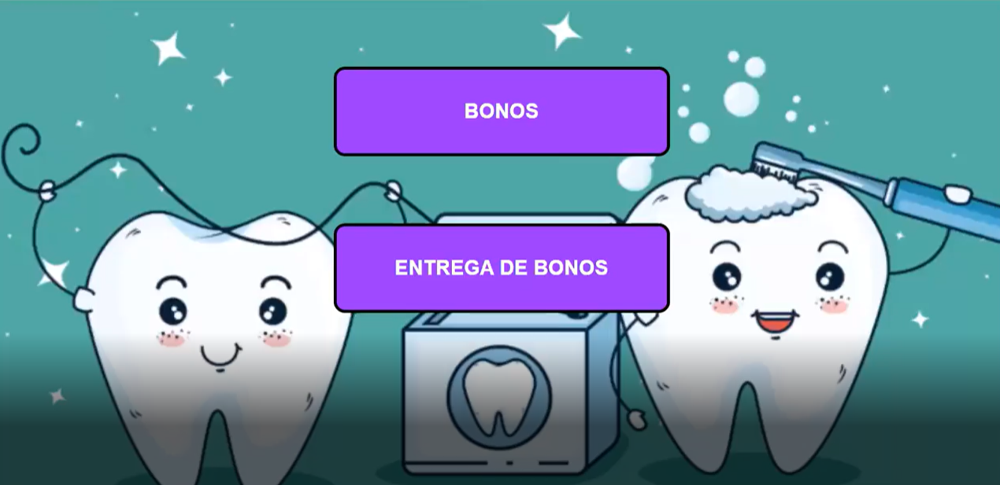
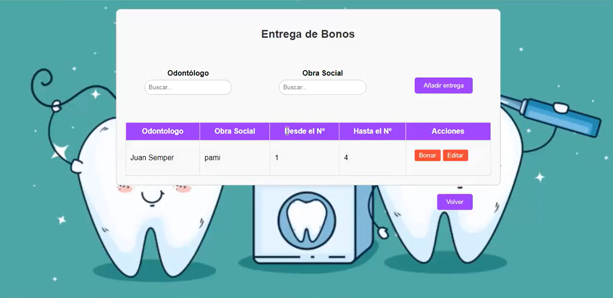
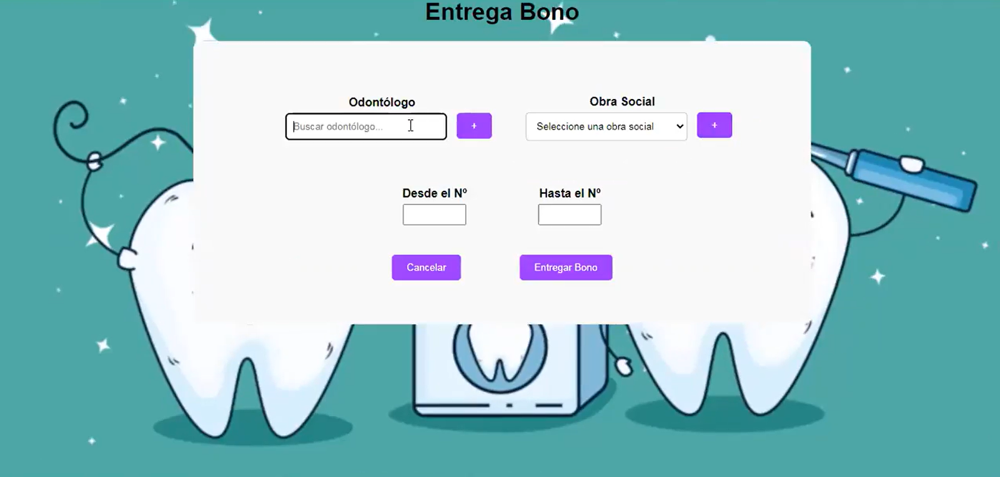
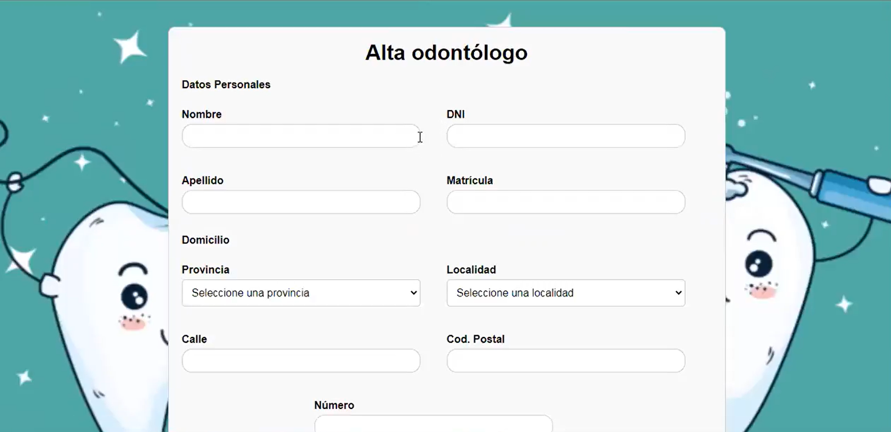

WebApp de registro y entrega de bonos para consultorios odontológicos
Nombre del proyecto: Agremiación Odontológica - Entrega de Bonos
Descripción: Este proyecto es una web que facilita la alta y entrega de bonos odontológicos. Fue desarrollado como trabajo de campo para la cátedra de Diseño de Sistemas en la UTN FRLP
Tipo: Proyecto académico - Cátedra Diseño de Sistemas UTN FRLP
Rol: Desarrollador Full-Stack
Fecha: Febrero 2024 - Marzo 2024
Colaboradores: Juan Manuel Semper
Ver códigoEl proyecto consistió en desarrollar un Sistema de Carga y Entrega de Bonos para la Agremiación Odontológica, destinado a ser utilizado en consultorios. El desafío principal fue digitalizar y automatizar el proceso de gestión de bonos, el cual es fundamental para la facturación y el servicio a los profesionales. La solución debía facilitar tanto el alta de bonos en el sistema como su posterior asignación controlada a los odontólogos.
Enfoque se centró en crear un flujo de trabajo sencillo y seguro para la manipulación de información sensible (datos de odontólogos y obras sociales). Prioricé tres áreas clave:
Se utilizó un enfoque de desarrollo centrado en la confiabilidad de los datos.
Construí una Web App de Gestión que sirve como columna vertebral para el manejo de bonos. La solución centraliza dos procesos críticos:
Módulo completo para el alta, baja y modificación de profesionales, almacenando datos clave para la facturación.
Registro y seguimiento de los talonarios de bonos disponibles, permitiendo la carga masiva por rangos numéricos.
Vinculación segura entre bonos, odontólogos y obras sociales, asegurando la trazabilidad de cada bono entregado.
Especificación formal y consignas del trabajo de campo.
Diagrama del modelo relacional de la aplicación.
Modelo Entidad-Relación en versión Enterprise Architect (.EAP).
Estructura lógica y relaciones entre entidades del sistema.
Flujo de pantallas y experiencia de usuario planificada.
Requerimientos funcionales detallados en formato ágil.
Digitalización del proceso
Control preciso de stock
Gestión rápida de entregas



